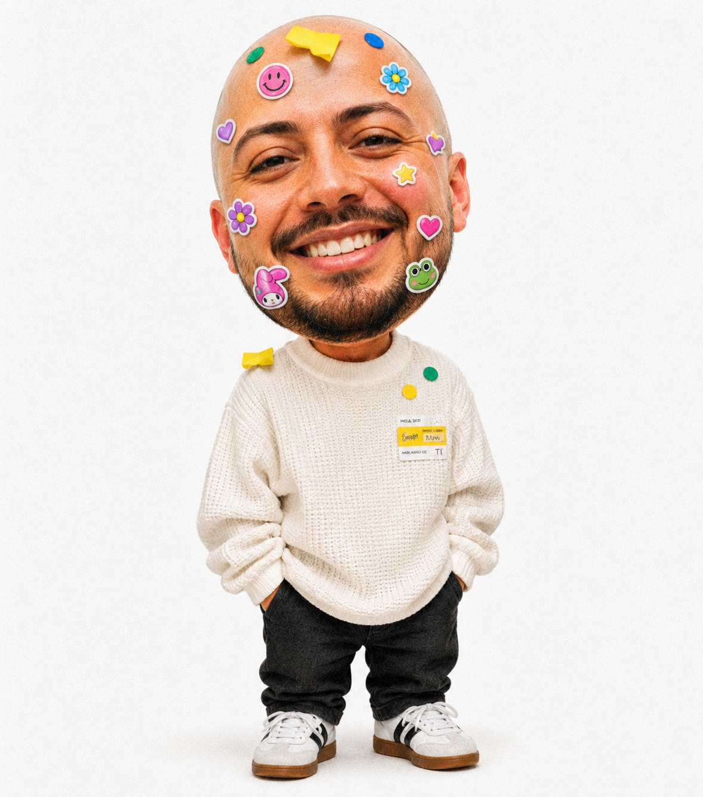
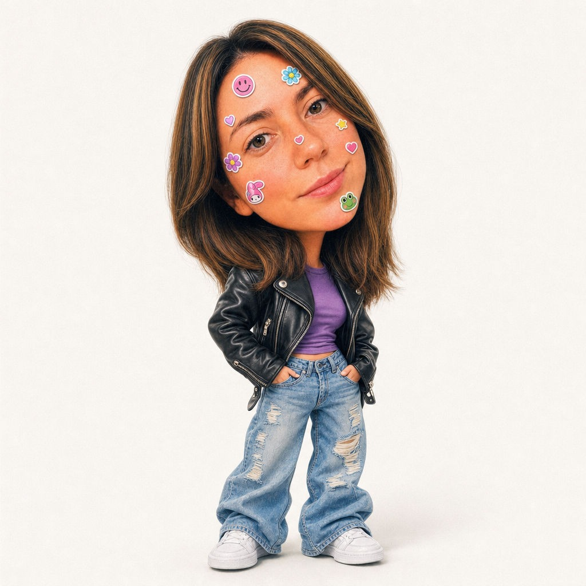
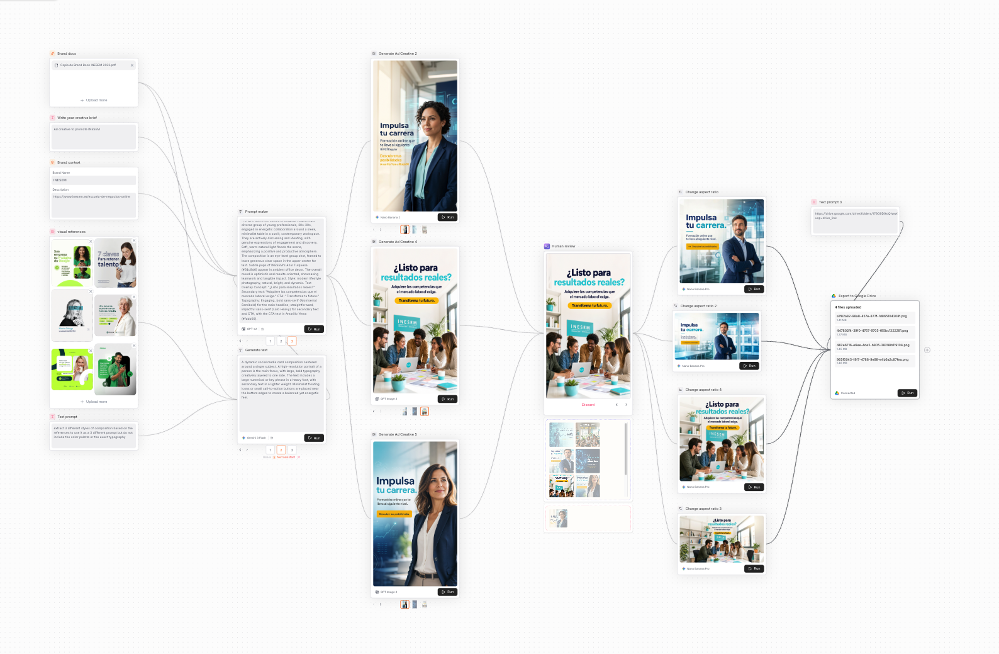
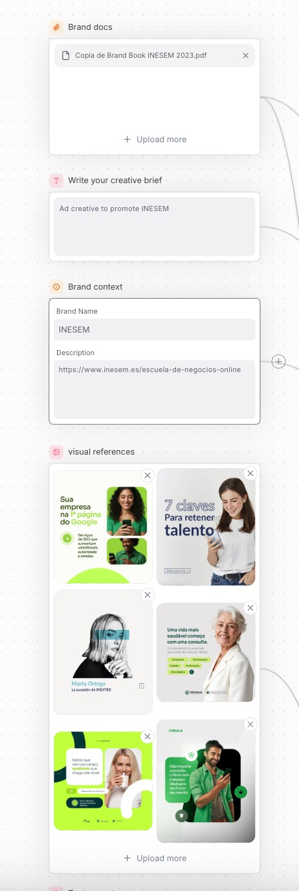
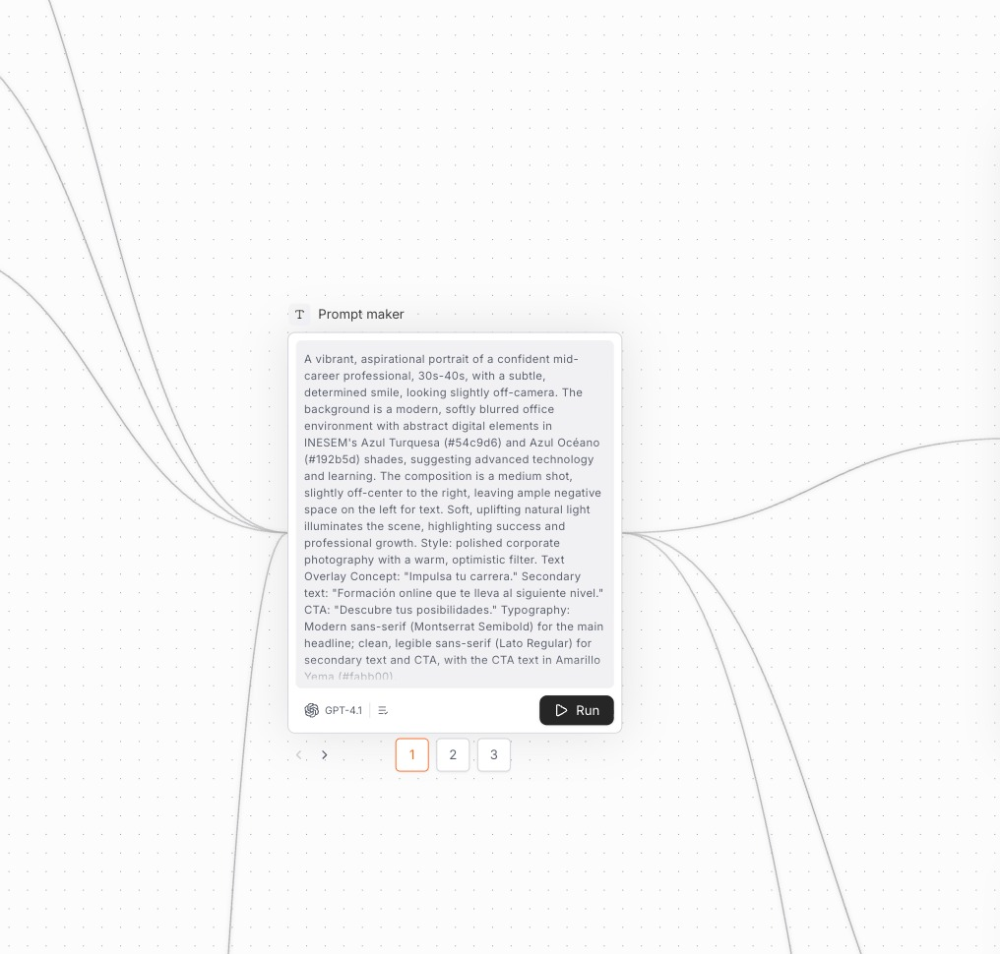
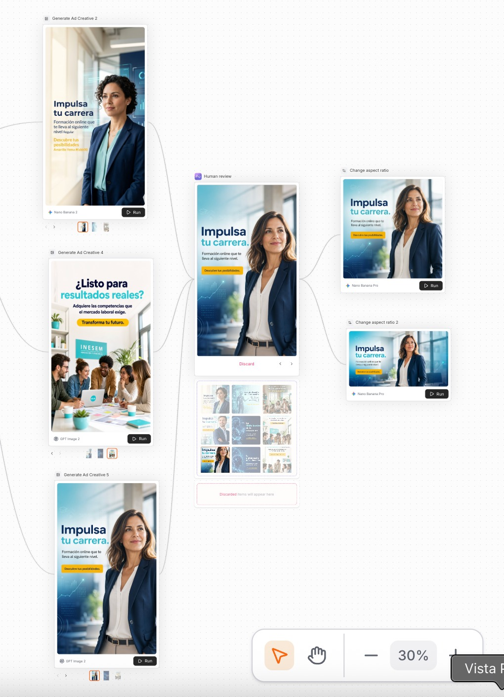

The developer · Ivan
The designer · Laura“The layout's rigid, the hierarchy's flat — where's the brand soul?”
“It looks amazing… but does it actually work?”
Teach the machine the brand. No vibes — only rules.
#EFEDEA + true black #000cubic-bezier(.82,0,.18,1)A real project for INESEM — brand in, dozens of on-brand ad creatives out. Here's the whole graph.



